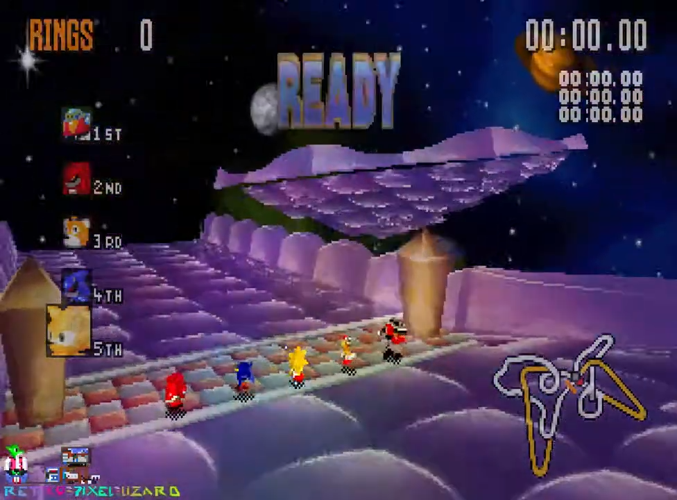
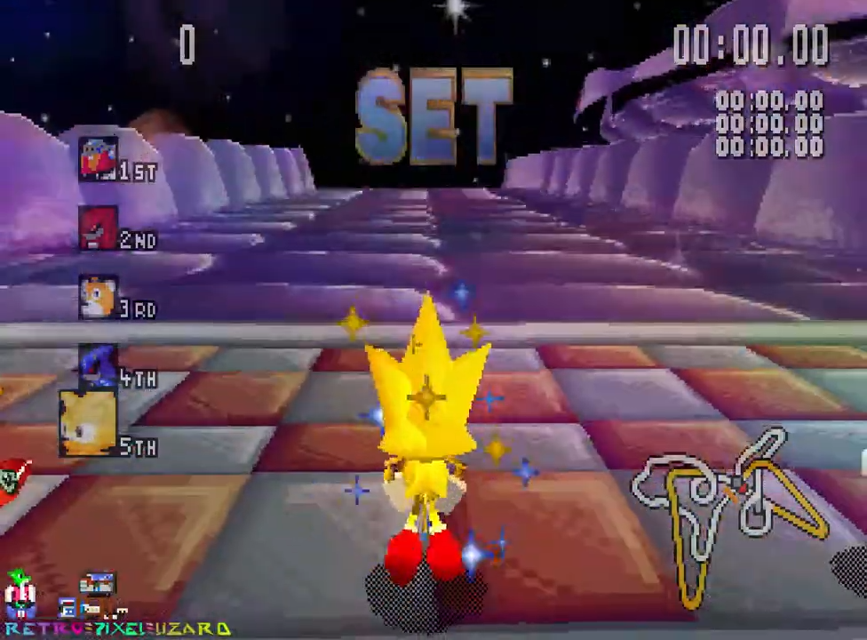
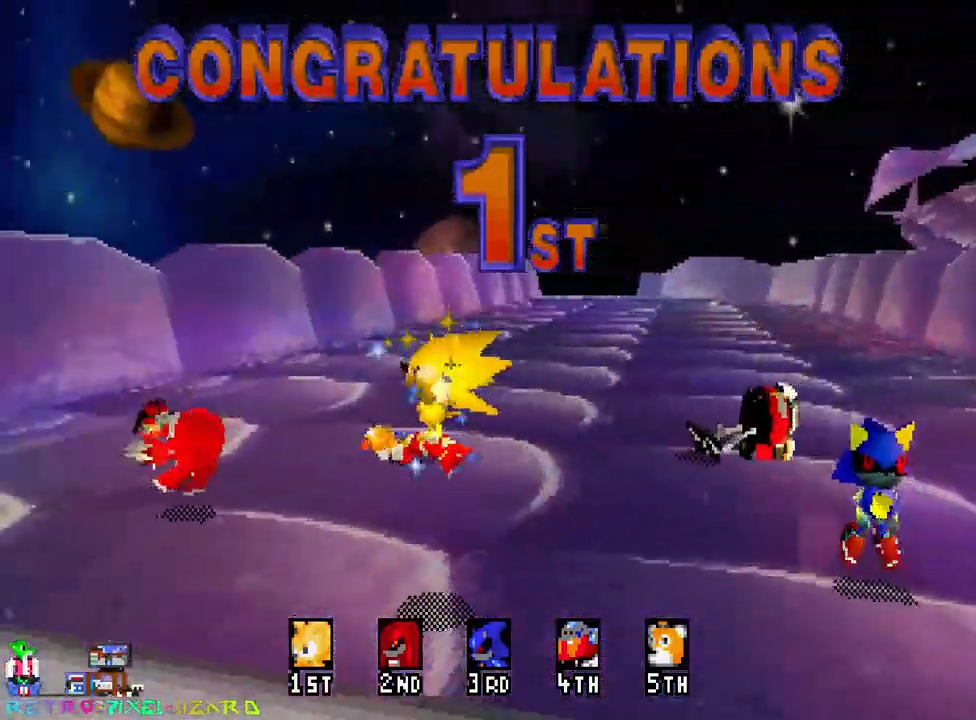

새턴 원본 OPTIONS·OPTION2·RESULTS의 그래픽 블록 27개 중 22개를 독립된 352×224 이미지로 분리했습니다.
SEGA SATURN · KOREAN LOCALIZATION
소닉 R
Sonic R / ソニックR
SEGA SATURN일본판제작 중배포 전 미리보기
소닉과 친구들이 자동차 대신 직접 달리는 3D 레이싱 게임. 평범한 순위 경쟁뿐 아니라 루프·숨겨진 길·링으로 열리는 통로가 있는 코스를 자유롭게 탐험하며 최단 경로를 찾는 재미가 있습니다.
배포 전 · 메뉴·그래픽 추출 및 구조 분석 중 제작 현황 확인 ↓
게임 정보
게임명소닉 R
플랫폼SEGA SATURN
대상일본판 · 21트랙 (2M)
장르3D 액션 레이싱
원작 발매일1997.12.04 (일본)
개발·발매Traveller's Tales / Sonic Team · SEGA
원작 정보: SEGA Sonic Channel · 패키지 이미지: 참고 이미지 출처
게임 카탈로그
GAME CATALOGUE · 작품 가이드SEGA SATURN · 1997 · ACTION RACING



원작 소개 · 게임 고유의 시스템
링과 지름길을 찾아 질주하는 3D 레이스
소닉과 친구들이 자동차 대신 직접 달리는 3D 레이싱 게임. 평범한 순위 경쟁뿐 아니라 루프·숨겨진 길·링으로 열리는 통로가 있는 코스를 자유롭게 탐험하며 최단 경로를 찾는 재미가 있습니다.
달리기·비행·스핀 대시의 차이소닉, 테일즈 등 캐릭터마다 이동 기술이 달라 코스를 공략하는 방법도 달라집니다.
링으로 열리는 지름길링을 모아 특수 게이트를 열고 다양한 코스의 지름길을 활용할 수 있습니다.
화면 자료: 새턴판 원본 플레이 영상에서 추출한 참고 프레임. 원본 참고 화면과 한국어 작업 캡처를 구분해 표기했습니다. 실제 배포본 스크린샷은 추후 교체될 수 있습니다.
한국어화 작업 내용
PC판 다국어 RAW 자산과 비교해 글자가 없는 배경이 분리 가능한지 검증하고, 원본과 일치하는 자료만 활용합니다.
큰 장식용 메뉴 타이틀은 수정 대상에서 제외하고, 나머지 사용자 인터페이스·이미지 한국어화를 우선합니다.
현재 진행 현황
작업 단계: 메뉴·그래픽 추출 및 구조 분석 중
현재 확인: 새턴 원본 이미지 추출·비교 정적 검사 중심
검수·제약: 최종 한글패치 빌드와 전체 인게임 이미지 분석, 실제 게임 테스트는 미완료입니다. 아래 화면은 한국어판이 아닌 새턴 원본 영상 참고 캡처입니다.
이 페이지는 2026.11.01 기준 공개된 프로젝트 안내용 초기 미리보기입니다. 실제 릴리스·빌드·실기 검수 완료를 의미하지 않습니다.
패치 배포 안내
한글패치 배포 준비 중
현재 공개 가능한 최종 패치 파일이나 다운로드 링크는 등록되지 않았습니다. 사용자 게임 검수와 패키징·배포 승인 이후 이 구역에 버전, 적용 방법, 파일 해시 및 다운로드 링크를 추가합니다.
다운로드 준비 중권리 및 이용 안내
본 페이지는 비상업적인 팬 한국어화 프로젝트의 제작 현황 안내입니다. 게임의 이미지·이름·원작 권리는 각 권리자에게 있습니다. 원본 게임 디스크·이미지·ROM은 제공하지 않으며, 향후 패치가 배포될 때에는 사이트의 파일 이용 및 재배포 안내가 적용됩니다. 이 페이지의 제작 중 설명을 배포 완료 또는 전체 플레이 검수 완료로 해석하지 마세요.